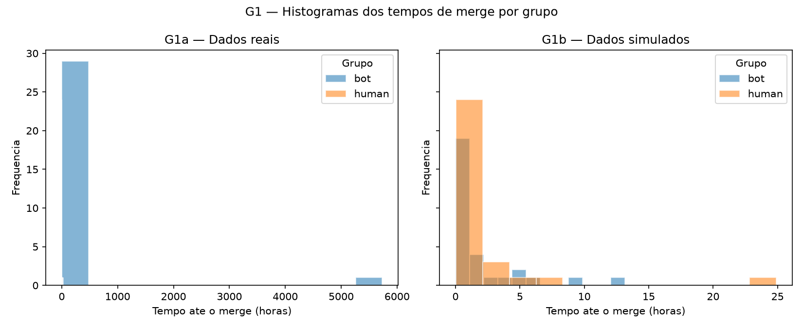
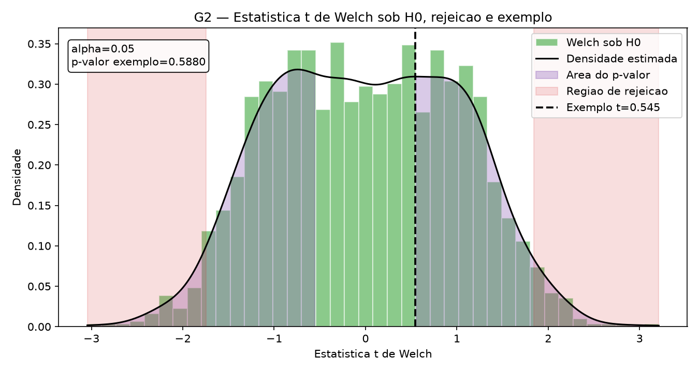
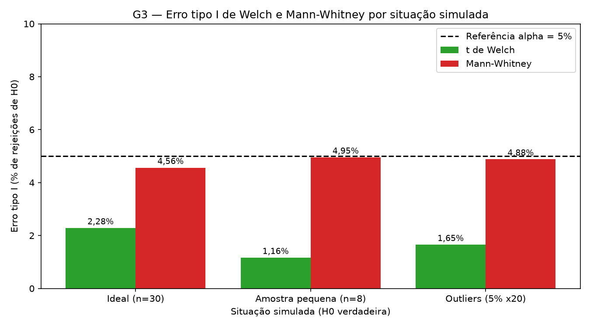
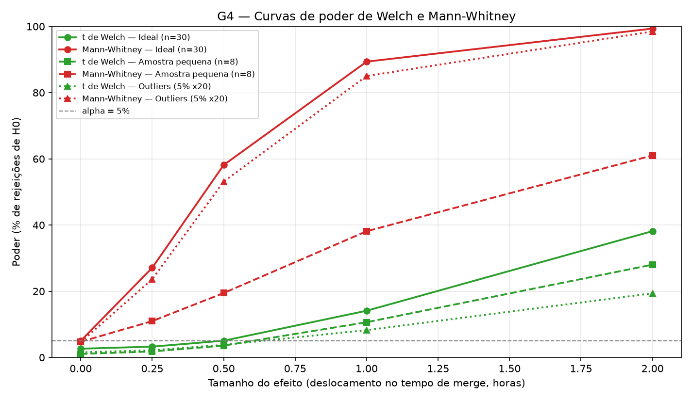

LAB04 — Testes de hipótese por dentro
Dashboard final: comparação entre t de Welch e Mann-Whitney para o tempo até o merge de pull requests.
Amanda Bicalho Silva
Guilherme de Almeida Santos
Pedro Rodrigues Duarte
30 bots + 30 humanos
Unidade: horas
Semente 42
10.000 repetições
1. Cenário
Pergunta: o tempo de merge difere entre PRs de autoria automatizada e PRs de autoria humana?
H₀: as distribuições são iguais. H₁: elas diferem. A análise é bicaudal. Os dados reais vêm da API REST pública do GitHub e foram filtrados para PRs mesclados com timestamps válidos. Os testes são t de Welch e Mann-Whitney.
2. Os dados — G1
Os dados reais têm 30 observações em cada grupo e foram modelados por distribuições lognormais calibradas com as medianas e a dispersão logarítmica observadas. A assimetria e as caudas longas representam tempos de merge muito prolongados; por isso, o cenário simulado preserva outliers em vez de substituí-los por médias. O parâmetro de efeito é deslocado em horas para avaliar a capacidade de detecção.

3. Como os testes funcionam — G2
Welch compara médias permitindo variâncias diferentes; Mann-Whitney compara a posição relativa dos postos e é menos sensível a valores extremos. A região de rejeição contém resultados pouco compatíveis com H₀ para α=0,05. O p-valor mede a compatibilidade dos dados com H₀; ele não é a probabilidade de H₀ ser verdadeira nem mede o tamanho ou a importância prática do efeito.

4. Erro tipo I — G3
O Mann-Whitney teve erro tipo I de 4,56% na situação ideal, 4,95% na amostra pequena, 4,88% na presença de outliers e foi conservador na situação ideal e adequado nas demais. O t de Welch teve erro tipo I de 2,28% na situação ideal, 1,16% na amostra pequena, 1,65% na presença de outliers e foi conservador em todas as situações. O desvio do Welch vem da assimetria lognormal e das caudas longas, que inflam a variância amostral e encolhem a estatística t, enquanto o Mann-Whitney usa postos e quase não sente valores extremos.

| Teste | Erro tipo I ideal | Repetições |
|---|---|---|
| welch_t | 2.28% | 10000 |
| mann_whitney | 4.56% | 10000 |
5. Poder — G4
Na situação ideal, o Mann-Whitney teve maior poder, chegando a 99,4% contra 38,2% do t de Welch no efeito de 2,00 h. A diferença cresceu com o efeito, de 23,8% em 0,25 h para 61,2% em 2,00 h. A vantagem não mudou de lado em nenhuma situação: a diferença média foi maior na presença de outliers (56,7%) e menor na amostra pequena (21,4%), onde os dois testes perdem poder.

| Teste | Efeito (h) | Poder ideal |
|---|---|---|
| mann_whitney | 0.00 | 5.03% |
| mann_whitney | 0.25 | 27.09% |
| mann_whitney | 0.50 | 58.14% |
| mann_whitney | 1.00 | 89.36% |
| mann_whitney | 2.00 | 99.35% |
No efeito de 2 horas sob violações, resultados adicionais:
| Situação | Teste | Poder |
|---|---|---|
| small_sample | welch_t | 28.03% |
| small_sample | mann_whitney | 61.03% |
| extreme_outlier | welch_t | 19.38% |
| extreme_outlier | mann_whitney | 98.47% |
6. Dados reais
Os resultados abaixo foram calculados diretamente sobre as 60 observações brutas, sem usar os resultados simulados.
| Teste | Estatística | p-valor | Tamanho do efeito | Nome do efeito | Decisão sobre H₀ | Conclusão |
|---|---|---|---|---|---|---|
| welch_t | 1.1383 | 0.2643 | 0.2939 | cohens_d | nao rejeita H0 | Não há evidência suficiente de diferença |
| mann_whitney | 482.0000 | 0.6414 | -0.0711 | rank_biserial | nao rejeita H0 | Não há evidência suficiente de diferença |
7. Conclusão
Antes da simulação, esperávamos que Mann-Whitney fosse mais robusto para a assimetria e os outliers, enquanto Welch poderia ser competitivo em dados aproximadamente simétricos. Os resultados confirmaram essa expectativa: Mann-Whitney ficou próximo de 5% no erro tipo I e apresentou maior poder nos efeitos avaliados, enquanto Welch foi conservador neste cenário lognormal. Recomendamos Mann-Whitney para este tipo de tempo de merge; a escolha pode mudar quando a pergunta for explicitamente sobre médias e os resíduos forem aproximadamente simétricos. A principal limitação é a amostra de conveniência de PRs públicos e o uso de autoria de bot como proxy de automação.
Roteiro oral
- Cenário: comparamos tempo de merge de bots e humanos em PRs públicos.
- Hipóteses: H₀ diz distribuições iguais; H₁ diz diferença.
- Coleta: 30 observações por grupo, usando created_at e merged_at.
- Distribuição: tempos são assimétricos e têm caudas longas.
- Welch: compara médias sem exigir variâncias iguais.
- Mann-Whitney: compara postos e posição relativa.
- p-valor: compatibilidade com H₀, não probabilidade de H₀.
- Erro tipo I: rejeitar H₀ quando ela é verdadeira.
- Erro tipo II: não detectar um efeito que existe.
- Poder: probabilidade de detectar um efeito real.
- Pressupostos: assimetria prejudica Welch neste cenário.
- Efeito: relatamos Cohen d e rank-biserial.
- Amostra: 60 PRs, suficiente para demonstração, não para generalização ampla.
- Recomendação: Mann-Whitney para caudas longas e outliers.
- Limitação: amostra de conveniência e proxy de autoria automatizada.